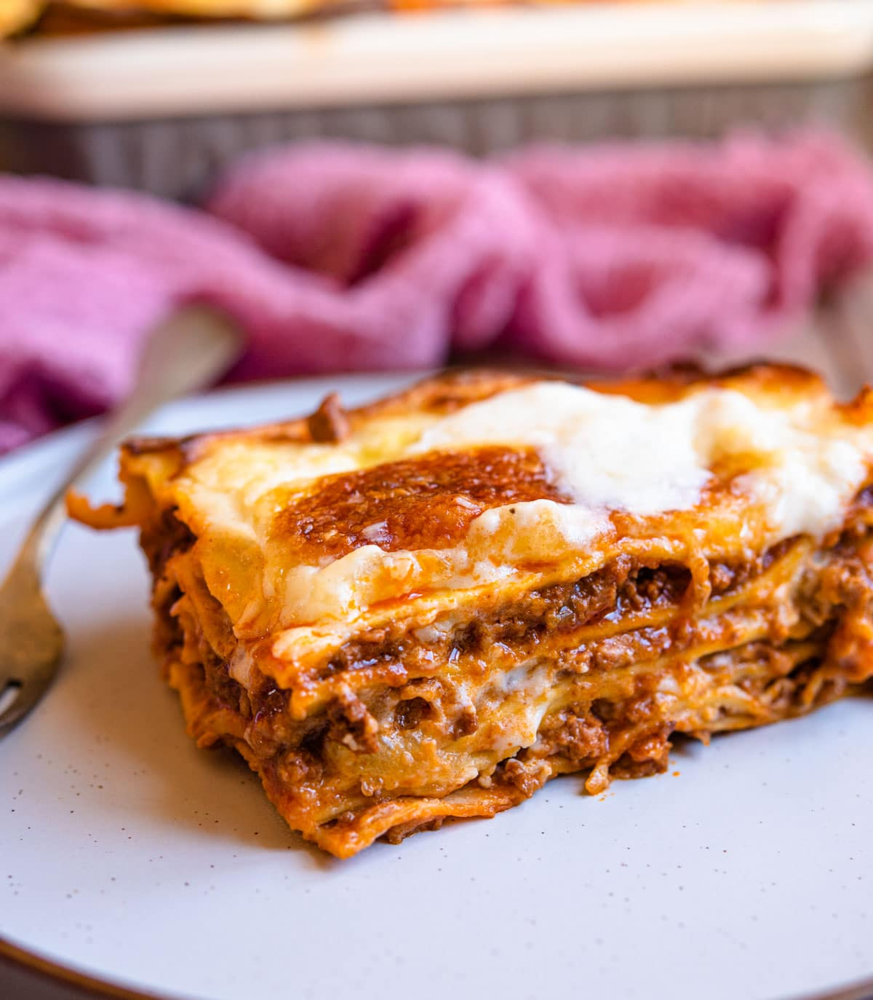

Lasagne al Forno

Lasagne al Forno is the perfect meal for Sunday dinner.
A classic recipe for homemade Lasagne al Forno, also known as Italian Beef Lasagna.
There's truly nothing more comforting than a hot bubbling baked lasagmna with homemade
bee ragu, bechamel sauce, silky pasta and topped with melted fresh mozzarella cheese!
Ingredients
- olive oil
- carrot finely chopped
- celery stalk
- white onion
- ground beef (mince)
- ground pork (mince)
- Passata (tomato puree)
- tomato paste
- red wine
- beef stock
- bay leaves
- sea salt and pepper
- butter
- flour all-purpose
- full fat milk
- nutmug
- freshly grated parmesan
- fresh lasagna pasta sheets
- fresh balls mozzarella
Ragu
- Finely chop the carrot, onion and celery and saute the
vegetables gently in a large frying pan with the olive oil.
Once the vegetables are soft add the beef and pork mince
and cook until browned.
-
If there is a lot of excess fat in the pan, spoon some out.
Add the red wine and reduce by half.
-
Once the wine has reduced, add the sieved tomatoes,
tomatoe paste, bay leaves, 4 cupsof beek stock(1 litre) and
a pinch of salt and pepper.
-
Sitr everything together and leave to simmer on a low heat
for 2.5-3 hours uncovered. Add the rest of the beef stock
half way through.
White Sauce
-
Add the butter to a saucepan and cook until melted and
bubbling.
-
Add the flour to the melted butter and stir to form a paste.
Let the flour cook for 1 minute.
-
Slowly whisk half of the milk into the butter andflour
constantly whisking to avoid any lumps. Once it has
started to thicken add the rest of the milk, nutmeg,
parmesan and a pinch of salt and pepper.
-
Continue to heat the sauce whilst stirring until thickened
enough to coat the back of a wooden spoon. Take off the
heat and set aside.
Assemble the lasagne
-
Preheat the oven to 350F (180C)
-
To assemble the lasagne, spoon a small amount of ragu on
the very bottom of the baking dish. Top with an even
layer of lasagna pasta sheets (cut the pasta sheets to fit
your baking dish).
-
Add a few more spoons of ragu so the pasta is completely
covered follow by 2 ladels of white sauce.
-
Repeat the layers of pasta, ragu, and bechamel sauce until
everything is useed up making sure to keep enough of
bechamel sauce for the very top layer.
-
Cover the top layer of the lasagne with torn mozzarella
and then bake in the oven for 45 miuntes or until bubbling
and golden.
-
Let it cool slightly for 5-10 minutes before serving.